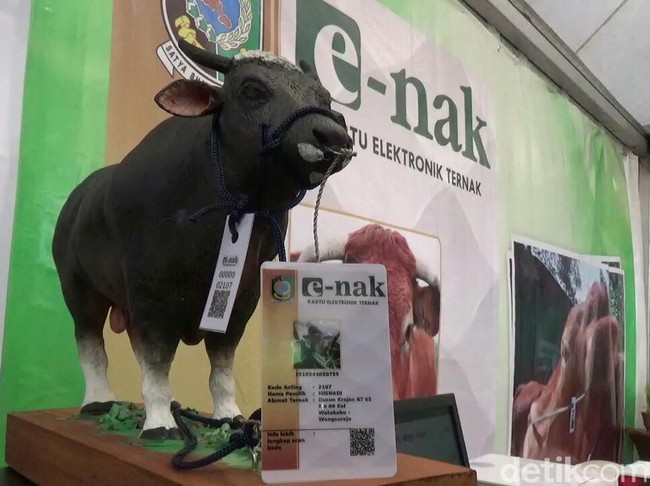
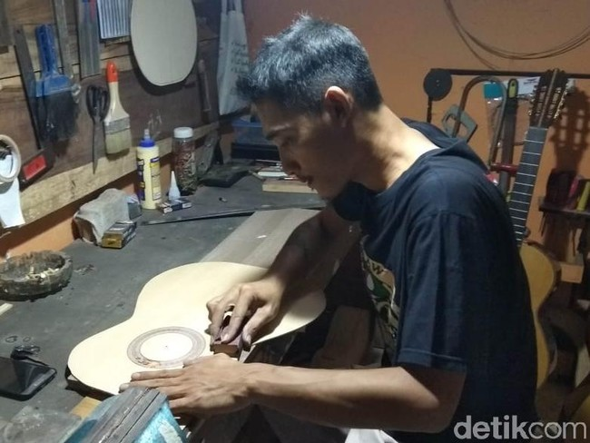

WOW ! Sapi Di Banyuwangi Punya KTP & Asuransi
01/07/2019 : Tak hanya warga yang didata di Banyuwangi. Hewan ternak juga punya kartu pengenal layaknya E-KTP. Pemkab Banyuwangi memiliki inovasi pendataan hewan ternak digital. Khususnya jenis sapi melalui kartu Elektronik Ternak (E-Nak). Hal ini dilakukan untuk memantau perkembangan kesahatan sapi dan tentunya sapi ini mendapatkan jaminan asuransi.
Macan Dahan yang Mati Dikulti
01/07/2019 : Sebuah unggahan foto yang beredar di Facebook mendadak viral karena menunjukan seekor macan dahan mati dikuliti. Macan dahan yang memiliki nama ilmia Neofelis Nebulosa merupakan jenis kucing berukuran sedang dengan panjang tubuh bisa mencapai 95 cm dan bulu berwarna kelabu kecoklatan.
